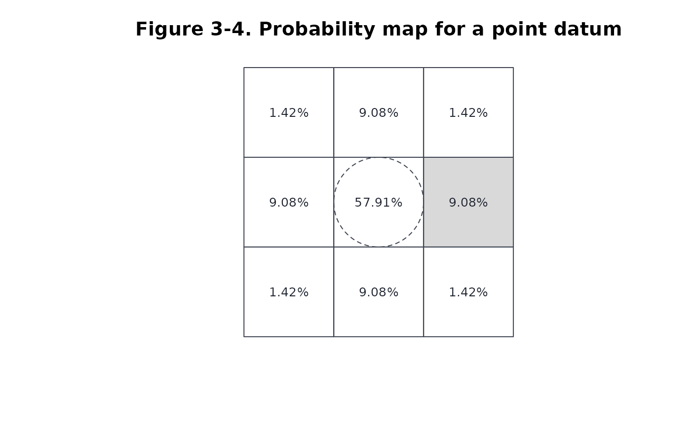
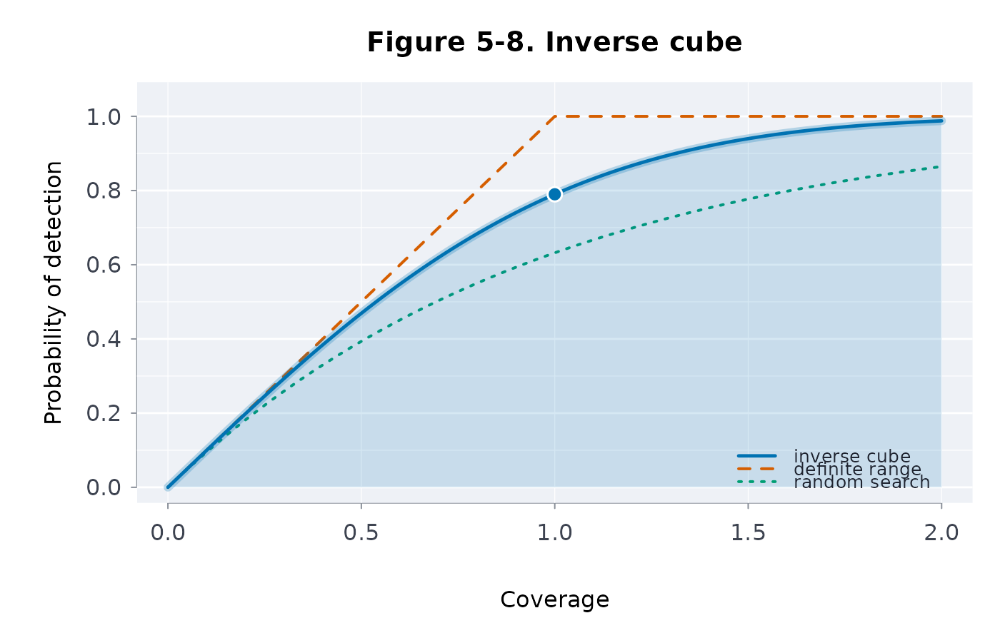
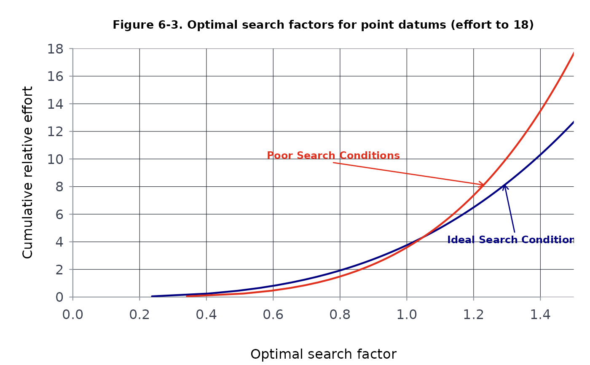

Draws any figure of Frost (1996), “The Theory of Search: A Simplified Explanation”, from the package's search theory functions with the book's parameters, and returns the numbers it drew.
Arguments
- fig
A figure number as text,
"5-7", or the chapter as a number withnum;NULL(the default) lists the figures.- num
The figure's number within chapter
fig, orNULL.- seed
Number: the seed of figure 6-6's random efforts. Default 1; the session's random number stream is left as it was.
- main
The title, or
NULLfor the book's caption.
Value
Without fig, a data frame of fig, caption,
how and yours: one line of R that draws the figure from your
own numbers (the function behind it, with example inputs to replace; for a
schematic, the computation it pictures). With one, the figure's data,
invisibly: a data frame (or a list of them) of what was drawn.
Details
srchfig() with no argument lists the book's 36 figures
(3-1 to 3-14, 4-1 to 4-7, 5-1 to 5-9 and 6-1 to 6-6) with how each is
drawn: "model" figures are computed from the functions with the
book's parameters and reproduce the values the text states (for example
57.91, 9.08 and 1.42 percent in figure 3-4,
0.75 and 0.6836 in figure 5-7, 0.7899 at coverage 1 in figure 5-8, the
optimal factor 1.02 at an effort of 4 E^2 in figure 6-3);
"schematic" figures are diagrams with no data (3-6, 4-3, 4-6, 5-2);
"approximation" figures are drawn from the model where the book's
plate cannot be recovered exactly: 3-7 (the density implied by boxing in two
circles is drawn as the "line" datum, a circular normal spread along
the segment), 3-13 (the book's surface is illustrative; it is drawn from the
cells of figure 3-14), 5-9 (the plate is blank in the published file; it is
drawn from the text, an inverse cube curve with a smaller sweep width and
flattened by navigation error), 6-6 (the book's random efforts are not
given; 250 groups of 5 are drawn here with seed).
Distances are in standard deviations of position error (E = 1.1774),
or in sweep widths (W = 1) for the lateral range figures. The
general methods draw the same figures with other parameters:
plot(ltrlrng(...), equiv = , spacing = ),
plot(srchpod(...), models = , m = ),
plot(datumpmap(...), view = ).
References
Frost, J. R. (1996). The Theory of Search: A Simplified Explanation. Soza and Company and U.S. Coast Guard Office of Search and Rescue. Chapters 3-6.
Examples
head(srchfig())
#> fig caption
#> 1 3-1 Probability density distribution for a point datum with top view
#> 2 3-2 Circle of radius one standard deviation and its circumscribed square
#> 3 3-3 Circle of radius E and its circumscribed square
#> 4 3-4 Probability map for a point datum
#> 5 3-5 Circle of radius 1.1 E and its circumscribed square
#> 6 3-6 Line datum: circles at the end points boxed in
#> how
#> 1 model
#> 2 model
#> 3 model
#> 4 model
#> 5 model
#> 6 schematic
#> yours
#> 1 plot(datumpmap(seq(-4, 4, by = 0.25), seq(-4, 4, by = 0.25), center = c(0, 0), sigma = 1.5), view = "both")
#> 2 sum(datumpmap(c(-1.5, 1.5), c(-1.5, 1.5), sigma = 1.5)$poc)
#> 3 sum(datumpmap(c(-1, 1) * 1.177 * 1.5, c(-1, 1) * 1.177 * 1.5, sigma = 1.5)$poc)
#> 4 plot(datumpmap(c(-3, -1, 1, 3) * 1.77, c(-3, -1, 1, 3) * 1.77, sigma = 1.5), view = "cells")
#> 5 sum(datumpmap(c(-1, 1) * 1.295 * 1.5, c(-1, 1) * 1.295 * 1.5, sigma = 1.5)$poc)
#> 6 plot(datumpmap(seq(-4, 4, by = 0.25), seq(-4, 4, by = 0.25), "line", center = c(0, -2), end = c(0, 2), sigma = 1), view = "both")
srchfig("3-4")

srchfig(5, 8)

d <- srchfig("6-3")

head(d)
#> model search effort releff cumeff factor side poc
#> 1 invcube 1 0.0500000 0.0500000 0.0500000 0.2369631 0.4739262 0.04829326
#> 2 invcube 1 0.2516854 0.2516854 0.2516854 0.4061098 0.8122195 0.13502834
#> 3 invcube 1 0.4533708 0.4533708 0.4533708 0.4941308 0.9882616 0.19298003
#> 4 invcube 1 0.6550562 0.6550562 0.6550562 0.5586206 1.1172411 0.23940023
#> 5 invcube 1 0.8567416 0.8567416 0.8567416 0.6109055 1.2218110 0.27882141
#> 6 invcube 1 1.0584270 1.0584270 1.0584270 0.6555076 1.3110151 0.31333999
#> coverage pod pos cumpos
#> 1 0.2226120 0.2197573 0.01061280 0.01061280
#> 2 0.3815146 0.3674620 0.04961779 0.04961779
#> 3 0.4642049 0.4392949 0.08477515 0.08477515
#> 4 0.5247890 0.4892854 0.11713505 0.11713505
#> 5 0.5739074 0.5280354 0.14722758 0.14722758
#> 6 0.6158083 0.5597678 0.17539764 0.17539764
try(srchfig("9-9"))
#> Error : srchfig: `fig` must be one of the book's figures, 3-1, 3-2, 3-3, 3-4, 3-5, 3-6, 3-7, 3-8, 3-9, 3-10, 3-11, 3-12, 3-13, 3-14, 4-1, 4-2, 4-3, 4-4, 4-5, 4-6, 4-7, 5-1, 5-2, 5-3, 5-4, 5-5, 5-6, 5-7, 5-8, 5-9, 6-1, 6-2, 6-3, 6-4, 6-5, 6-6; got "9-9"